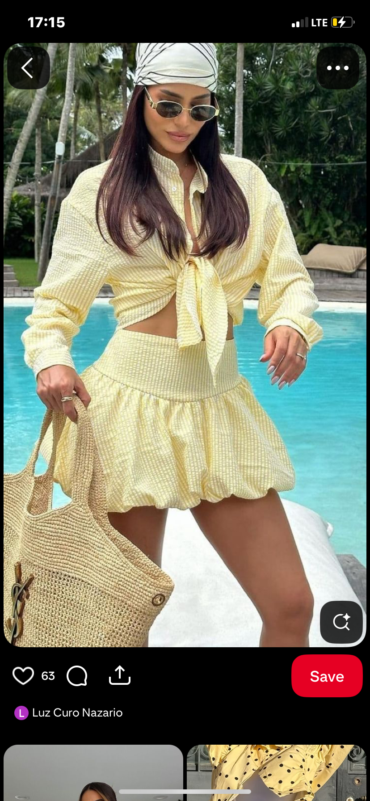
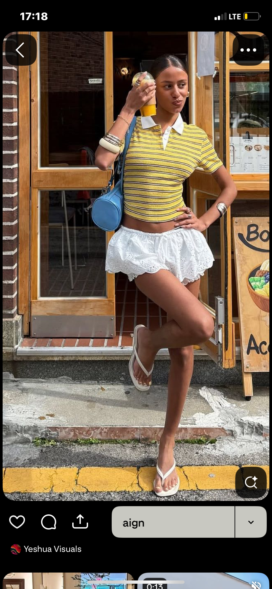
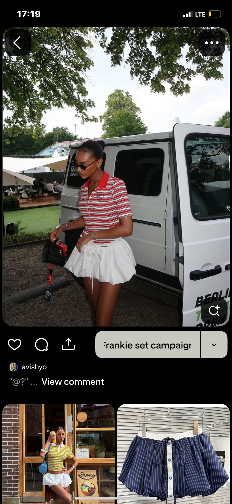
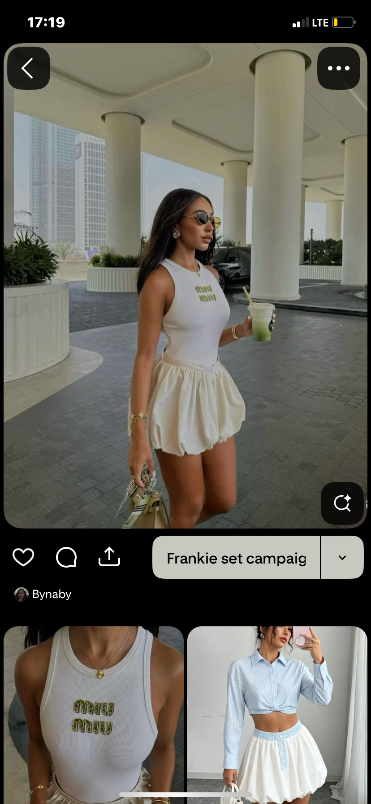
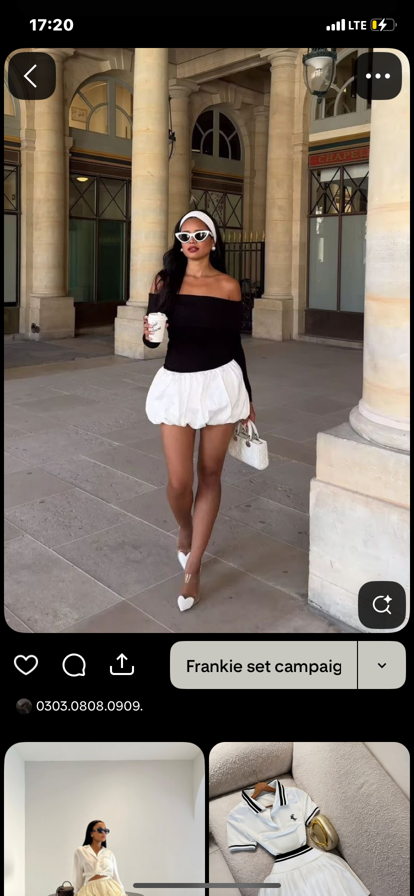
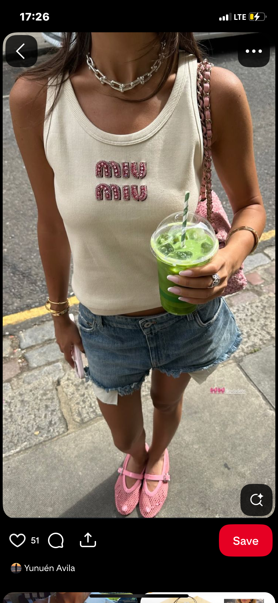
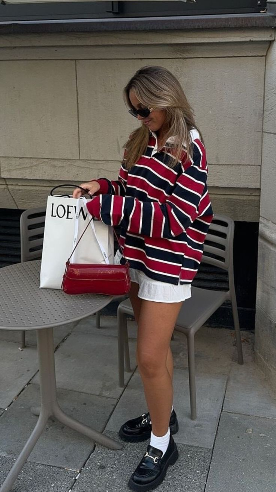
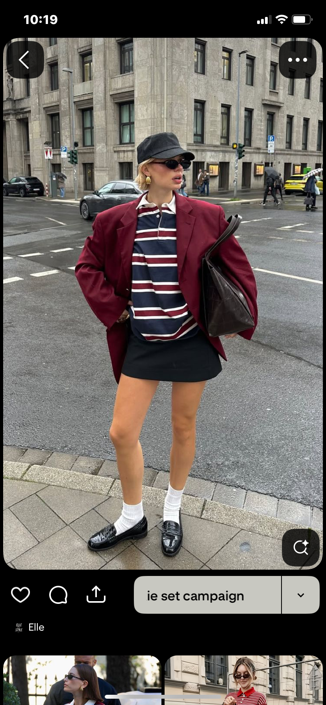
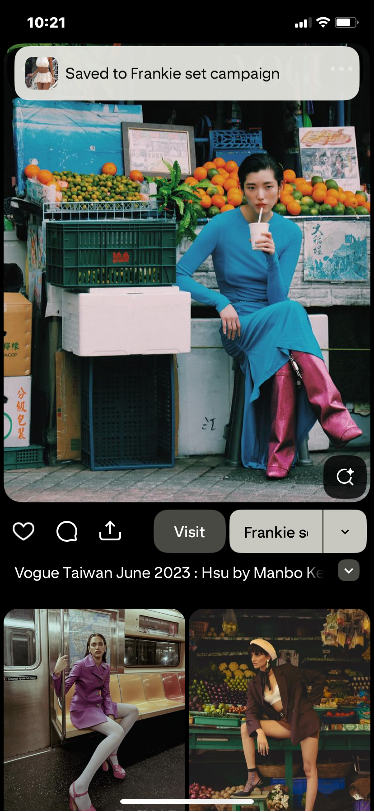

Che Orika · Campaign Brief
TheFrankieSet
"She just threw it on."
02 · The Concept
She doesn't explain her outfit.
She doesn't second-guess it either.
Preppy pinstripe meets playful bubble skirt. Structured and spontaneous in one set. The Frankie Set girl knows who she is — this campaign captures her in motion. Real moments, real confidence, shot like a film still.
Effortless
Confident
Cinematic
Preppy x Playful
Her Rules
In Motion
03 · Mood Board
The Vibe,Visualised









04 · The Looks
Shoot DayBreakdown
Five setups. Move through them in order — the lighting and locations are sequenced for efficiency. The content gets assembled from these shots afterwards. Shoot the shots, then build the content.
01
Look 1 · The Full Set
Her RulesFull Frankie Set · Cafe Exterior
Key Shots
Close-up of hand grabbing coffee off counter — pinstripe sleeve visible
Walking out of cafe, full outfit reveal
Mid-stride walking shot, skirt bouncing
Sitting down, crossing legs, skirt sits perfectly
Looking back over shoulder (the close shot)
Detail: close-up of ruffle hem in motion
Detail: pinstripe fabric texture
Standing portrait, full outfit Photo
Holding CO branded paper bag Photo
02
Look 2 · Street Vibe
Off DutyBubble Skirt + Tank · Car + Sidewalk
Key Shots
Leaning on car, one hand in pocket/on hip, looking away
Walking shot from behind, skirt movement
Standing, scrolling phone, candid
Detail: sunglasses + outfit from mid-body up
Against car, full body Photo
Candid, looking at phone Photo
03
Look 3 · Soft Girl
Main CharacterBubble Skirt + Kitten Heels · Outdoor Seating
Key Shots
Sitting, legs crossed, adjusting bracelet
Walking slowly, tiny bag in hand, heels clicking
Close-up of hands/nails/bracelets with skirt in background
Looking at reflection in window or mirror
Seated portrait, soft light Photo
Detail of accessories + skirt Photo
04
Look 4 · Layered
The Jacket MoveShirt Open as Jacket · Same Locations
The shirt as a jacket shows versatility. Same piece, three different ways to wear it. This is the "one item, your whole wardrobe" proof of concept.
Key Shots
Walking with shirt open, flowing behind her
Adjusting the shirt collar — the casual move
Bonus: same shirt over tank with wide-leg trousers Bonus
Full body, shirt-as-jacket look Photo
05
Look 5 · Style Swap
How We'd Each Style ItSame Bubble Skirt · Different Girls
Requires 2-3 Friends on Set
No voiceover, no talking. Just visual transitions between each friend's version. Let the styling speak for itself. Keep the energy casual and real — these are friends, not models.
Key Shots
Friend 1 full outfit reveal — her styling of the bubble skirt
Transition cut to Friend 2 — completely different styling, same skirt
Transition cut to Friend 3 — third way to wear it (if 3 friends)
Close-up of the skirt in each version — same ruffle, different vibe Key
All friends together, final group shot Photo
05 · Accessories & Wardrobe
What WeNeed on Set
Wardrobe
The Frankie Set (pinstripe shirt + bubble mini)
Fitted white tank top
Fitted black tank top
Knitted collar top
Oversized tee
Blazer
Jeans (for 3-checks clip)
Wide-leg / big trousers
Shoes & Accessories
Loafers
White socks (tall)
Sambas or Vans
Slipper heels / kitten heels
Pointed heels
Sunglasses — cat-eye or vintage
Small crossbody bag
Tiny bag (soft girl)
Details, Props & Beauty
Delicate bracelets
Thin chain necklace
Hair tie / ribbon options
Cap (for style swap look)
Coffee cup or smoothie
Phone (prop)
CO branded paper bag
Nails done — neutral/french/soft tone
Hair styling options sorted
06 · Location Scout
Where WeShoot
Cafe — Primary
Cafe Flour (Maitama) or Vintage Cafe. Need: outdoor/exterior access, clean entrance, outdoor seating. Natural light is non-negotiable.
Car + Sidewalk
An aesthetic parked car on a clean Maitama or Wuse II street. Needs shadow/shade or good direct light — avoid harsh mid-day overhead sun.
Walking Path / Street
Clean sidewalk in Maitama/Wuse with minimal distractions. Used for walking shots — needs enough length for 3-5 second tracking shots.
Outdoor Terrace / Wall
Restaurant terrace or park bench with texture. Pretty wall behind for soft girl portraits. Needs soft, diffused light — mid-morning or late afternoon.
Location Strategy: Aim to find one block in Maitama that gives you cafe + sidewalk + outdoor seating + a parked car within walking distance. Moving between locations wastes the golden hour. Scout the day before — walk the actual block at the time of day you plan to shoot.
07 · Post-Production Plan
What We'reMaking From This
Reel
Campaign Reel
25-30 sec. The showstopper. Pulls from: Looks 1, 2, 3
Reel
Street Vibe Reel
Off-duty, cool girl. Pulls from: Look 2
Reel
Soft Girl Reel
Feminine, intentional. Pulls from: Look 3
Reel
Style Swap — How We'd Each Style It
Friends each style the same bubble skirt their way. Visual transitions, no talking. Pulls from: Look 5
Reel
One Skirt, Different Tops
Transition edit — versatility proof. Pulls from: Looks 1, 2, 3, 4
Educational
3 Checks
Voiceover edit. Quality assurance storytelling. Pulls from: All looks
BTS
Behind the Scenes
Candid shoot day clips. Authentic, unpolished. Pulls from: All day
Carousel
Photo Carousel
Best stills, editorial format. Pulls from: All looks (photo shots)
Stories
Story Content
Polls, clips, the CO bag moment, try-on content. Pulls from: All looks
08 · Models
Who WeNeed
01
Primary Model
The Frankie Set Girl
Young, 20-24 energy. She carries the whole campaign. The vibe is confident but not try-hard — she moves like she belongs everywhere. All five looks depend on her energy reading right on camera.
Look 1Look 2Look 3Look 4Style Swap
Confirm availability, outfit sizes, and shoe size before booking shoot day. Test shot session recommended if first time working together.
02
Supporting · Look 5 (Style Swap)
The Friends
2-3 friends who each style the bubble skirt their own way. Casual energy — these are real people, not professional models. They just need to look natural on camera and have their own sense of style. Each one brings a different vibe to the same skirt.
Style Swap
Confirm each friend's sizes and have them bring their own tops/shoes/accessories so the styling feels authentic to each person.
Team Notes — Frankie Set